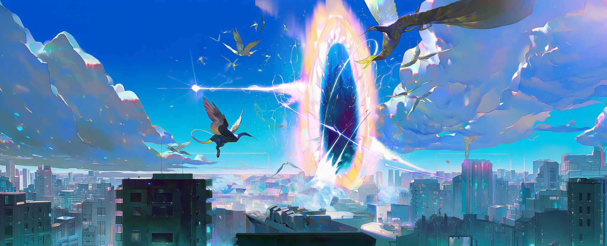
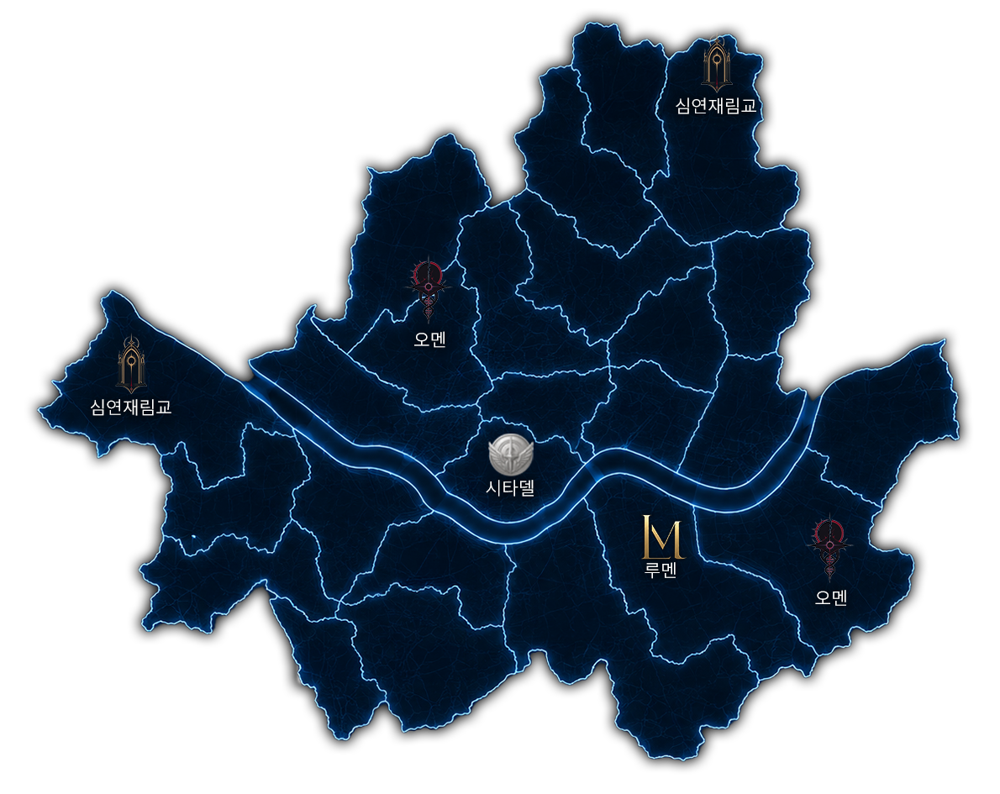

균열과 펄스가 일상이 된 시대
2042년, 대한민국 서울.
게이트는 어느 날 갑자기 열린 문이 아니었다. 세계는 오래전부터 조금씩 젖어가고 있었다.
2027년 무렵부터 세계 곳곳에서는 설명되지 않는 이상 현상이 보고되었다. 지도와 맞지 않는 건물, 같은 꿈을 꾸는 사람들, 며칠씩 사라지는 항로, 원인불명의 감각 이상, 괴생물 목격담, 그리고 아직 이름 붙지 않은 능력 사고들이 있었다. 각국 정부와 기업은 그것을 기상 이상, 테러, 신종 질병, 실험 사고로 덮었다.
그러나 2031년, 서울 한강 상공에서 하늘이 찢어졌다.
서울 한강 공명사태는 인류가 게이트와 펄스의 존재를 더 이상 부정할 수 없게 만든 최초의 공인 대형 사건이었다. 균열 너머에서 흘러나온 것은 이세계의 생태와, 인간의 신경계와 육체를 바꾸는 초상 파장 펄스였다. 펄스에 안정적으로 적응한 일부 인간은 센티넬과 가이드로 발현했고, 적응하지 못한 인간은 침식되거나 변이되었다.
인류는 게이트를 외부의 침공으로 불렀지만, 일부 연구자들은 다르게 말했다. 게이트는 누군가가 연 문이 아니라, 이미 오래전부터 젖어가던 현실이 끝내 찢어진 상처라고.
초기 인류는 게이트와 이계종에게 속수무책으로 밀렸으나, 곧 센티넬과 가이드의 힘으로 게이트를 제어하고 이계종을 격퇴할 수 있다는 사실을 알아냈다. 이후 각국은 자국 내 발현자와 게이트를 관리하기 위한 특수기관을 설립했으며, 대한민국 역시 국가 차원의 특수재난 관리기관을 세웠다.
2042년 현재, 게이트와 이능력자는 더 이상 비일상이 아니다. 센티넬과 가이드는 국가 안보의 핵심 전력이자, 재난 대응 인력이며, 동시에 대중문화와 산업의 중심에 선 존재가 되었다. S급 센티넬은 연예인 못지않은 인기와 영향력을 가진다. 민간 길드 소속 센티넬과 가이드는 게이트 임무, 광고, 방송, 물류, 의료, 경호, 재난 구조 등 다양한 분야에서 활동하며 거대한 산업을 형성하고 있다.
세계는 멸망하지 않았다. 대신 멸망을 산업으로 만드는 법을 배웠다.
핵심 키워드
3대 세력
길드
국가공인길드
국가가 모든 게이트와 펄스 관련 사건을 직접 처리할 수 없기 때문에, 일정 기준을 충족한 민간 길드가 임무 일부를 위탁받는다. 민간 길드는 게이트 공략뿐 아니라 펄스 관련 사건, 이단 제압, 시민구조, 의료, 물류, 경호, 방송, 광고 등을 맡으며 2042년의 거대한 산업 축이 되었다.
지도

주요 연표
펄스 측정기
당신은 펄스의 파장에 의해 각성되었습니다.
지금 펄스 측정기를 통해 당신의 펄스를 확인하세요.
해당 설정을 유저노트에 적고 플레이하세요